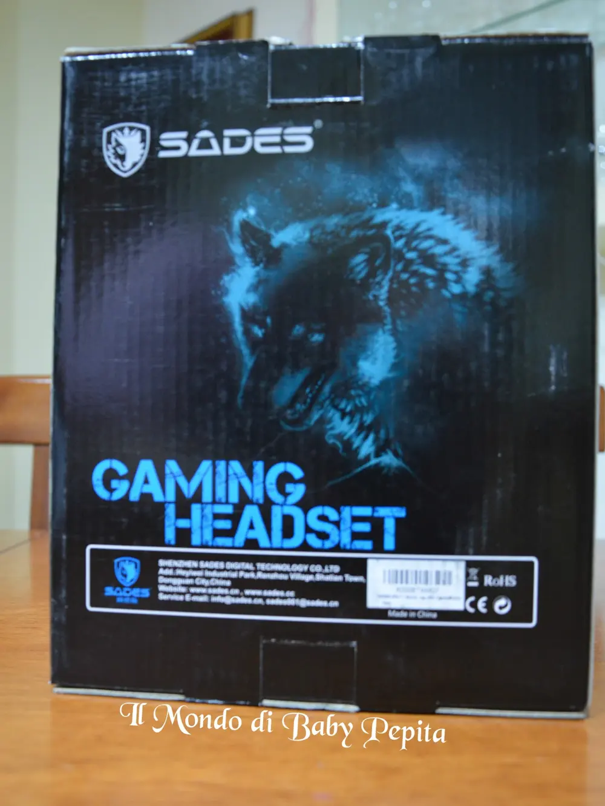
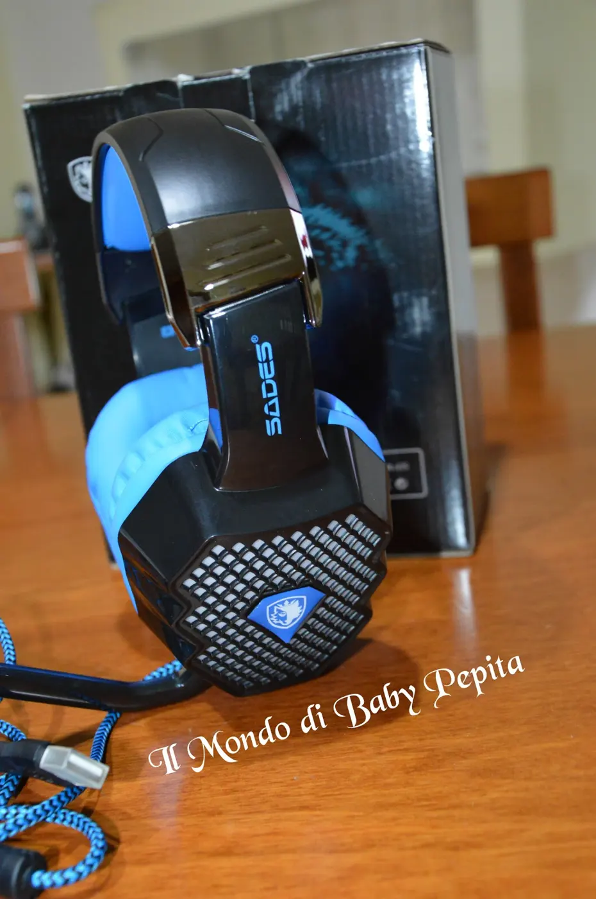
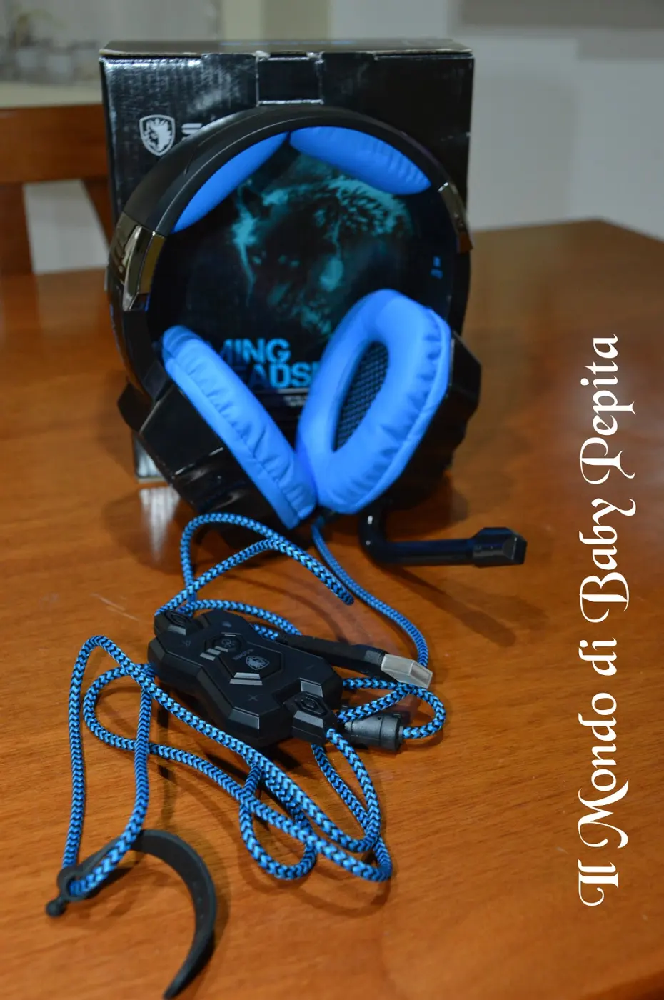
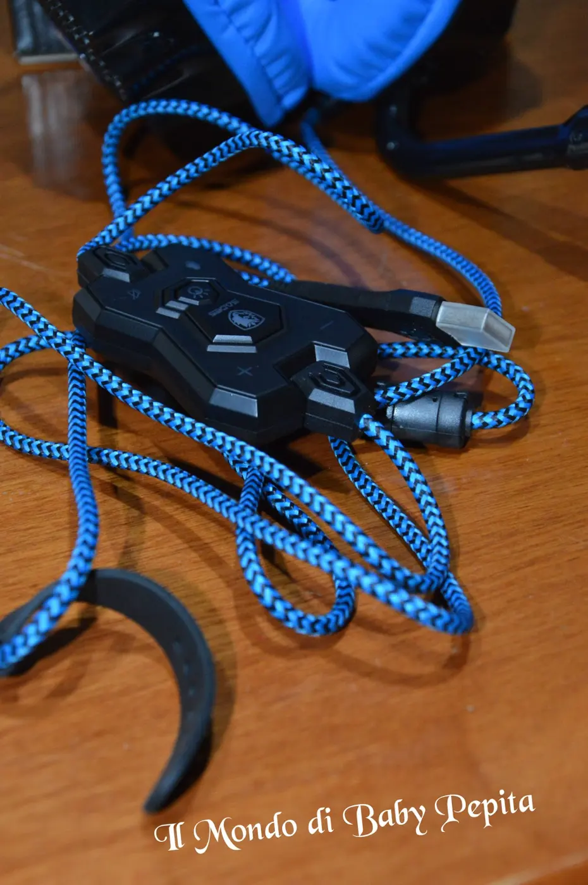

Cuffie Surround per PC Gaming, con Microfono HiFi
Ancora Amazon e ancora una collaborazione, ancora in compagnia del venditore Gamin World.
Indovinate un pò? di nuovo cuffie ahahahbeh sì, sono stata colpita dalle loro cuffie e così collaborando di nuovo insieme ho scelto di nuovo le cuffie.
Questa volta sono blu, belle belle.
All'interno della scatola con raffigurato questo lupo che già ci fa incuriosire e ci lascia intuire la qualità delle cuffie, troviamo ovviamente le cuffie, un CD con i driver e le istruzioni per installare il programma.SCHEDA TECNICA:
Marca: SADES
Modello: A70
Dimensioni: 10 x 21,5 x 17,5 cm
Diametro dell'autoparlante: 50mm
Funzione aggiuntiva: Vibrazione.
Sound effect: 7.1 simulato
Frequenza: 20 to 20.000Hz.
Sensibilità: 113dB +/- 3dB at 1kHz.
Impedenza: 16 Ohm at 1kHz.
Potenza in Input: 30mW (Max).
Distorsione: inferiore al 2% THD.
Sensibilità del Mic: -38dB+/-3dB.
Dimensione del Mic: 6.0mmx5.0mm.
Impedenza del Mic: minore di 2.2K Ohm.
Lunghezza del cavo: circa 2.2m.
Spina: USB.
Confezione: Cuffie con manuale e CD d'installazione.
Cuffie molto belle anche esteticamente, ha le luci LED che lampeggiano dove c'è la griglia nei lati a ritmo di 6 colori. Na figata insomma :D

Sono costruite di una plastica robusta e piacevole al tatto. L'arco è regolabile e dotato al suo interno, di una staffa in metallo rendendole molto più resistenti.

Il microfono si può cambiare di posizione infatti è estraibile, cosa molto carina direi; mettete caso non vi servisse, o usate le cuffie per guardare un film o ascoltare la musica possono dunque essere tolte tranquillamente. Ha 5 tasti per il volume, per la luce e per disattivare o attivare il microfono.

Hanno i cuscinetti alle orecchie davvero ben imbottiti da circondare tutto l'orecchio in modo da poter sentire bene i suoni e isolarsi, anche se non ci si sente del tutto isolati. Ha una scheda audio integrata USB, che può essere utilizzata al posto della scheda audio del pc.In conclusione, cuffie di qualità. .consiglio a tutti i giocatori di videogames principalmente di acquistarle.
Prezzo: 48,99 €
Vi lascio il link qualora voleste acquistarle:http://www.amazon.it/SADES-A70-Microfono-Controllo-Lampeggianti/dp/B00XCDXIS8/ref=cm_cr_arp_d_product_top?ie=UTF8#productDetailsAlla prossima recensione!